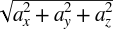

1Chapter 4. Kinetics
2Recall that kinetics is the study of 3012the motion of bodies, including the forces that act on them. 3013 It's now time that we combine the material presented in the earlier chapters—namely, kinematics and forces—to study the subject of kinetics. 5 As in 6Chapter 23016 on kinematics, we'll first discuss particle kinetics and then go on to discuss rigid-body kinetics.
9In kinetics, the most important equation that you must 10consider is Newton's second law:
| 10F10 = m10a |
| 14M14cg14 = 14I α |
19Collectively, these two equations are referred to as 20the 20equations of motion3030 .
3038This chapter will primarily discuss the first type of problem, where you know the force(s) acting on the body, which is more common to in-game physics. 3039 The second type of problem has become important with the advent of motion-based controllers such as the Sony SixAxis and Nintendo Wii Remote. 31 These controllers rely 33on 33digital accelerometers3042 to directly measure the acceleration of a controller. 3043 While this is most often used to find the controller's orientation, it is also possible to integrate the time history of these sensor values to determine velocity and position. 3044 Additionally, if you know the mass of the controller or device, you can find the force. 3045 Accelerometers are found in most smartphones as well, which also allows for the use of kinematic-based input. 37 So as to not confuse the two types of problems, we'll discuss the second type, with the acceleration as input, in detail in 38Chapter 213048 .
41Let us stress that you must consider the sum of 41all3050 of the forces acting on the body when solving kinetics problems. 3051 These include all applied forces and all reaction forces. 3052 Aside from the computational difficulties of solving the equations of motion, one of the more challenging aspects of kinetics is identifying and properly accounting for all of these forces. 3053 In later chapters, you'll look at specific problems where we'll investigate the particular forces involved. 45 3055For now, and for the purpose of generality, let's stick with the idealized forces introduced in the previous chapter.
49Here is the general procedure for solving kinetics problems of interest to us:
3060Calculate the body's mass properties (mass, center of mass, and moment of inertia).
3063Identify and quantify all forces and moments acting on the body.
3069Solve the equations of motion for linear and angular accelerations.
3072Integrate with respect to time to find linear and angular velocity.
3075Integrate again with respect to time to find linear and angular displacement.
3078This outline makes the solution to kinetics problems seem easier than it actually is because there are a number of complicating factors that you'll have to overcome. 3079 For example, in many cases the forces acting on a body are functions of displacement, velocity, or acceleration. 3080 This means that you'll have to use iterative techniques in order to solve the equations of motion. 3081 Further, since you most likely will not be able to derive closed-form solutions for acceleration, you'll have to numerically integrate in order to estimate velocity and displacement at each instant of time under consideration. 73 These computational aspects will be addressed 74further in 76Chapter 776 through 77Chapter 133087 .
80Particle Kinetics in 2D
81As in particle 3093kinematics, in particle kinetics you need to consider only the linear motion of the particle. 85 Thus, the equations of motion will consist of equations of the form 85F85 = 85m85a3094 , where motion in each coordinate direction will have its own equation. 86 The equations for 2D particle motion are:
| 86ΣF86x86 = m a86x |
| 86ΣF86y86 = m a86y |
91The resultant force and acceleration vectors are:
| 91a91 = a91x 91i91 + a91y 91j |
| 92Σ92F92 = ΣF92x 92i92 + ΣF92y 92j |
92ΣF = 
|
3104Let's look at an example that appears simple but demonstrates the complexity of finding closed-form solutions. 96 97A ship floating in water, initially at rest, starts up its propeller generating a thrust, 97T3106 , which starts the ship moving forward. 98 Assume that the ship's forward speed is slow and the 99resistance to its motion can be approximated by:
| 99R = –C v |
3116The first step in solving this problem is to identify all of the forces acting on the ship. 108 109Figure 4-1109 shows a 109free-body diagram109 of the ship with all of the forces acting on it—namely, the propeller thrust, 109T109; resistance, 109R109; the ship's weight, 109W109; and buoyancy, 109B3118 .
122Now you can write the equation (for motion in the x-direction) 124using Newton's second law, as follows:
| 124ΣF = m a |
| 124T – R = m a |
| 124T – (C v) = m a |
3138The next step is to integrate this equation of motion in order to derive a formula for the speed of the ship as a function of time. 130 To do this, you must make the substitution 130a130 = 130dv130/130dt130, rearrange, integrate, 131and then solve for speed as follows:
| 131T – (C v) = m (dv/dt) |
| 131dt = (m / (T–Cv)) dv |
| 131∫131(0 to t)131 dt = ∫131(v1 to v2)131 (m / (T–Cv)) dv |
| 131t – 0 = –(m/C) ln(T–Cv) | 131(v1 to v2) |
| 131t = –(m/C) ln(T–Cv1312131) + (m/C) ln(T–Cv1311131) |
| 131t = (m/C) [ln(T–Cv1311131) – ln(T–Cv1312131)] |
| 131(C/m) t = ln [(T–Cv1311131) / (T–Cv1312131)] |
| 131e131(C/m) t131 = e 131ln [(T–Cv1) / (T–Cv2)] |
| 131e131(C/m) t131 = (T–Cv1311131) / (T–Cv1312131) |
| 131(T–Cv1312131) = (T–Cv1311131) e131–(C/m)t |
| 131v1312131 = (T/C) – e131–(C/m) t131 (T/C – v1311131) |
138Now that you have an equation for speed as a function of time, you can derive an equation for 3148displacement (distance traveled, in this case) as a function of time. 140 Here, you'll have to recall the formula 140v dt140 = 140ds3149 , substitute the previous formula for speed, integrate, rearrange, and solve for distance traveled. 141 These steps are shown here:
| 141v dt = ds |
| 141v1412141 dt = ds |
| 141((T/C) – e141–(C/m) t141 (T/C – v1411141)) dt = ds |
| 141∫141(0 to t)141 (T/C) – e141–(C/m) t141 (T/C – v1411141) dt = ∫141(s1 to s2)141 ds |
| 141(T/C) ∫141(0 to t)141 dt – (T/C – v1411141) ∫141(0 to t)141 e141–(C/m) t141 dt = s1412141 – s1411 |
| 141[(T/C) t + ((T/C) – v1411141)(m/C) e141–(C/m) t141] 141(0 to t)141 = s1412141 – s1411 |
| 141[(T/C) t + ((T/C) – v1411141)(m/C) e141–(C/m) t141] – [0 + ((T/C) – v1411141)(m/C)] = s1412141 – s1411 |
| 141(T/C) t + (T/C – v1411141) (m/C) e141–(C/m) t141 – (T/C – v1411141) (m/C) = s1412141 – s1411 |
| 141s1412141 = s1411141 + (T/C) t + (T/C – v1411141) (m/C) e141–(C/m) t141 – (T/C – v1411141) (m/C) |
143Finally you can write an equation for 144acceleration by going back to the original equation of motion and solving for acceleration:
| 144T – (C v) = m a |
| 144a = (T – (C v)) / m |
| 147v = v1472147 = (T/C) – e147–(C/m) t147 (T/C – v1471147) |
149In summary, the equations for velocity, distance traveled, and acceleration are as follows:
| 149v1492149 = (T/C) – e149–(C/m) t149 (T/C – v1491149) |
| 149s1492149 = s1491149 + (T/C) t + (T/C – v1491149) (m/C) e149–(C/m) t149 – (T/C – v1491149) (m/C) |
| 149a = (T – (C v)) / m |
151To illustrate the motion of the ship further, we've plotted the ship's speed, distance traveled, and acceleration versus time, as shown in 152Figure 4-2152, 154Figure 4-3154, and 155Figure 4-43165 . 157 To facilitate these illustrations, we've assumed the following:
3168The initial ship speed and displacement are 0 at time 0.
3170The propeller thrust is 20,000 thrust units.
3172The ship's mass is 10,000 mass units.
3174The drag coefficient is 1,000.

183You'll notice that the ship's speed approaches 3196the steady state speed of 20 speed units, assuming that the propeller thrust remains constant. 3197 This corresponds to a reduction in acceleration from a maximum acceleration at time 0 to no acceleration once the steady speed is achieved.
3200This example illustrates how to set up the differential equations of motion and integrate them to find velocity, displacement, and acceleration. 3201 In this case, you were able to find a closed-form solution—that is, you were able to integrate the equations symbolically to derive new ones. 3202 You could do this because we imposed enough constraints on the problem to make it manageable. 194 But you can readily see that if there were more forces acting on the ship, or if the thrust were not held constant but was some function of speed, or if the resistance were a function of speed squared, and so on, the problem gets increasingly complicated—making a closed-form solution much more difficult, if not 3208impossible.
204As in kinematics, 3217extending the equations of motion for a particle to three dimensions is easy to do. 209 You simply need to add one more component and will end up with three equations as follows:
| 209ΣF209x209 = m a209x |
| 209ΣF209y209 = m a209y |
| 209ΣF209z209 = m a209z |
211The resultant force and acceleration vectors are now:
| 211a211 = a211x 211i211 + a211y 211j211 + a211z 211k |
| 211a =  |
| 211Σ211F211 = ΣF211x 211i211 + ΣF211y 211j211 + ΣF211z 211k |
211ΣF = 
|
3222To hammer these concepts home, we want to present another example.
216Let's go back to the cannon example 218program discussed in 219Chapter 23229 . 3230 In that example, we made some simplifying assumptions so we could focus on the kinematics of the problem without complicating it too much. 3231 One of the more significant assumptions we made was that there was no drag acting on the projectile as it flew through the air. 3232 Physically, this would be valid only if the projectile were moving through a vacuum, which, of course, is unlikely here on Earth. 3233 Another significant assumption we made was that there was no wind to act on the projectile and affect its course. 3234 These two considerations, drag and wind, are important in real-life projectile problems, so to make this example a little more interesting—and more challenging to the user if this were an actual game—we'll add these two considerations now.
3236First, assume that the projectile is a sphere and the drag force acting on it as it flies through the air is a function of some drag coefficient and the speed of the projectile. 228 This drag force 229can be written as follows:
| 229F229d229 = –C229d 229v |
| 229F229d229 = –C229d229 v229x 229i229 – C229d229 v229y 229j229 – C229d229 v229z 229k |
| 240F240w240 = –C240w 240v240w |
| 240F240w240 = –C240w 240v240wx 240i240 – C240w 240v240wz 240k |
242where 242C242w242 is the drag coefficient, 242v242w3251 is the wind speed, and the minus sign means that this force opposes the projectile's motion when the wind is blowing in a direction opposite of the projectile's direction of motion. 3252 When the wind is blowing with the projectile—say, from behind it—then the wind will actually help the projectile along instead of impede its motion. 244 In general, 244C244w244 is not necessarily equal to the 244C244d3253 shown in the drag formula. 245 Referring to 246Figure 2-3246, we'll define the wind direction 3257as measured by the angle γ. 249 The 249x249 and 249z249 components of 250the wind force can now be written in terms of the wind direction, γ, as follows:
| 250F250wx250 = F250w250 cos γ = –(C250w250 v250w250) cos γ |
| 250F250wz250 = F250w250 sin γ = –(C250w250 v250w250) sin γ |
3262We ignored the y-direction as we assume the wind is flowing parallel to the ground. 254 Finally, let's apply a gravitational force to the projectile instead of specifying the effect of gravity as a constant acceleration, as we did in 255Chapter 23265 . 3266 This allows you to include the force due to gravity in the equations of motion. 258 Assuming that the projectile is relatively close to sea level, the gravitational force can be written as:
| 258F258g258 = –m g 258j |
259where the minus sign indicates that it acts in the negative y-direction (pulling the projectile toward the earth), and 259g3268 on the righthand side of this equation is the acceleration due to gravity at sea level.
261Now that all of the forces have been identified, you can write the equations of motion in each coordinate direction:
| 261ΣF261x261 = F261wx261 + F261dx261 = m (dv261x261/dt) |
| 261ΣF261y261 = F261dy261 + F261gy261 = m (dv261y261/dt) |
| 261ΣF261z261 = F261wz261 + F261dz261 = m (dv261z261/dt) |
262Note here that we already made the substitution 262dv262/262dt3271 for acceleration in each equation. 3272 Following the same procedure shown in the previous section, you now need to integrate each equation of motion twice—once to find an equation for velocity as a function of time, and another to find an equation for displacement as a function of time. 3273 As before, we'll show you how this is done component by component.
3275You might be asking yourself, where's the thrust force from the cannon that propels the projectile in the first place? 3276 In this example, we're looking specifically at the motion of the projectile after it has left the muzzle of the cannon, where there is no longer a thrust force acting on the projectile; it isn't self-propelled. 3277 To account for the effect of the cannon thrust force, which acts over a very short period of time while the projectile is within the cannon, you have to consider the muzzle velocity of the projectile when it initially leaves the cannon. 3278 The components of the muzzle velocity in the coordinate directions will become initial velocities in each direction, and they will be included in the equations of motion once they've been integrated. 270 The initial velocities will show up in the velocity and displacement equations just like they did in the example in 271Chapter 23281 . 273 You'll see this in the following 3283sections.
279The first step is 3289to make the appropriate substitutions for the force terms in the equation of motion, and then integrate to find an equation for velocity.
| 281–F281wx281 – F281dx281 = m(dv281x281/dt) |
| 281–(C281w281 v281w281 cos γ) – C281d281 v281x281 = m dv281x281/dt |
| 281dt = m dv281x281 / [–(C281w281 v281w281 cos γ) – C281d281 v281x281] |
| 281∫281(0 to t)281 dt = ∫281(vx1 to vx2)281 –m / [(C281w281 v281w281 cos γ) + C281d281 v281x281] dv281x |
| 281t = –(m/C281d281) ln((C281w281 v281w281 cos γ) + C281d281 v281x281)| 281(vx1 to vx2) |
| 281t = –(m/C281d281) ln((C281w281 v281w281 cos γ) + C281d281 v281x2281) + (m/C281d281) ln((C281w281 v281w281 cos γ) + C281d281 v281x1281) |
| 281(C281d281/m) t = ln[((C281w281 v281w281 cos γ) + C281d281 v281x1281) / ((C281w281 v281w281 cos γ) + C281d281 v281x2281)] |
| 281e281(C281d 281/m) t281 = e281ln[((C281w 281v281w 281cos γ) + Cd v281x1281) / ((Cw vw cos γ) + C281d 281v281x2281)] |
| 281e281(Cd/m) t281 = ((C281w281 v281w281 cos γ) + C281d281 v281x1281) / ((C281w281 v281w281 cos γ) + C281d281 v281x2281) |
| 281((C281w281 v281w281 cos γ) + C281d281 v281x2281) = ((C281w281 v281w281 cos γ) + C281d281 v281x1281) e281–(C281d281/m) t |
| 281v281x2281 = (1/C281d281) [ e281(–C281d281/m) t281 (c281w281 v281w281 cos γ + C281d281 v281x1281) – (C281w281 v281w281 cos γ)] |
| 284v284x2284 dt = ds284x |
| 284(1/C284d284) [e284(–C284d284/m) t284 (c284w284 v284w284 cos γ + C284d284 v284x1284) – (c284w284 v284w284 cos γ)] dt = ds284x |
| 284∫284(0 to t)284 (1/C284d284) [e284(–C284d284/m) t284 (c284w284 v284w284 cos γ + C284d284 v284x1284) – (c284w284 v284w284 cos γ)] dt = |
| 284= ∫284(sx1 to sx2)284 ds284x |
| 284s284x2284 = [(m/C284d284) e284(–C284d284/m) t284 (–(C284w284 v284w284 cos γ) / C284d284 – v284x1284) – ((C284w284 v284w284 cos γ) / C284d284) t] – |
| 284[(m/C284d284) (–(C284w284 v284w284 cos γ) / C284d284 – v284x1284)] + s284x1 |
293For the 293y293 components, 294you need to follow the same procedure shown earlier for the 294x3304 components, but with the appropriate y-direction forces. 296 Here's what it looks like:
| 296–F296dy296 – F296gy296 = m (dv296y296/dt) |
| 296–C296d296 v296y296 – m g = m (dv296y296/dt) |
| 296∫296(0 to t)296 dt = –m ∫296(vy1 to vy2)296 1/(C296d296 v296y296 + m g) dv296y |
| 296v296y2296 = (1/C296d296) e296(–C296d296/m)t296 (C296d296 v296y1296 + m g) – (m g)/C296d |
| 298v298y2298 dt = ds298y |
| 298[(1/C298d298) e298(–C298d298/m)t298 (C298d298 v298y1298 + m g) – (m g)/C298d298] dt = ds298y |
| 298∫298(0 to t)298 [(1/C298d298) e298(–C298d298/m)t298 (C298d298 v298y1298 + m g) – (m g)/C298d298] dt = ∫298(sy1 to sy2)298 ds298y |
| 298s298y2298 = s298y1298 + [–(v298y1298 + (m g)/C298d298) (m/C298d298) e298(–C298d298/m)t298 – t (m g)/C298d298] + [(m/C298d298)(v298y1298 + (m g)/C298d298)] |
305With the 305z305 component, 3315you get a break. 307 You'll notice that the equations of motion for the 307x307 and 307z307 components look almost the same with the exception of the 307x307 and 307z3316 subscripts and the sine versus cosine terms. 308 Taking advantage of this fact, you can simply copy the 308x308 component equations and replace the 308x308 subscript with a 308z308 and the cosine terms with sines and be done with it:
| 308v308z2308 = (1/C308d308) [e308(–C308d308/m)t308 (c308w308 v308w308 sin γ + C308d308 v308z1308) – (c308w308 v308w308 sin γ)] |
| 308s308z2308 = [(m/C308d308) e308(–C308d308/m)t308 (–(C308w308 v308w308 sin γ) / C308d308 – v308z1308) – ((C308w308 v308w308 sin γ)/C308d308) t] – |
| 308[(m/C308d308) (–(C308w308 v308w308 sin γ)/C308d308 – v308z1308)] + s308z1 |
//--------------------------------------------------------------------------------//
int DoSimulation(void)
//--------------------------------------------------------------------------------//
{
.
.
.
// new local variables:
double sx1, vx1;
double sy1, vy1;
double sz1, vz1;
.
.
.
// Now we can calculate the position vector at this time
// Old position vector commented out:
//s.i = Vm * cosX * time + xe;
//s.j = (Yb + L * cos(Alpha*3.14/180)) + (Vm * cosY * time) −
(0.5 * g * time * time);
//s.k = Vm * cosZ * time + ze;
// New position vector calculations:
sx1 = xe;
vx1 = Vm * cosX;
sy1 = Yb + L * cos(Alpha * 3.14/180);
vy1 = Vm * cosY;
sz1 = ze;
vz1 = Vm * cosZ;
s.i =((m/Cd) * exp(-(Cd * time)/m) * ((-Cw * Vw * cos(GammaW * 3.14/180))/Cd −
vx1) - (Cw * Vw * cos(GammaW * 3.14/180) * time) / Cd ) -
( (m/Cd) * ((-Cw * Vw * cos(GammaW * 3.14/180))/Cd - vx1) ) + sx1;
s.j = sy1 + ( -(vy1 + (m * g)/Cd) * (m/Cd) * exp(-(Cd*time)/m) −
(m * g * time) / Cd ) + ( (m/Cd) * (vy1 + (m * g)/Cd) );
s.k =((m/Cd) * exp(-(Cd * time)/m) * ((-Cw * Vw * sin(GammaW * 3.14/180))/Cd −
vz1) - (Cw * Vw * sin(GammaW * 3.14/180) * time) / Cd ) -
( (m/Cd) * ((-Cw * Vw * sin(GammaW * 3.14/180))/Cd - vz1) ) + sz1;
.
.
.
}3325To take into account the cross wind and drag, you'll need to add some new global variables to store the wind speed and direction, the mass of the projectile, and the drag coefficients. 3326 You'll also have to add some controls in the dialog window so that you can change these variables when you run the program. 318 319Figure 4-53329 shows how we added these interface controls in the upper-right corner of the main window.
//---------------------------------------------------------------------------------//
LRESULT CALLBACK DemoDlgProc(HWND hDlg, UINT message, WPARAM wParam, LPARAM lParam)
//---------------------------------------------------------------------------------//
{
.
.
.
case WM_INITDIALOG:
.
.
.
// New variables:
sprintf( str, "%f", m );
SetDlgItemText(hDlg, IDC_M, str);
sprintf( str, "%f", Cd );
SetDlgItemText(hDlg, IDC_CD, str);
sprintf( str, "%f", Vw );
SetDlgItemText(hDlg, IDC_VW, str);
sprintf( str, "%f", GammaW );
SetDlgItemText(hDlg, IDC_GAMMAW, str);
sprintf( str, "%f", Cw );
SetDlgItemText(hDlg, IDC_CW, str);
.
.
.
case IDC_REFRESH:
.
.
.
// New variables:
GetDlgItemText(hDlg, IDC_M, str, 15);
m = atof(str);
GetDlgItemText(hDlg, IDC_CD, str, 15);
Cd = atof(str);
GetDlgItemText(hDlg, IDC_VW, str, 15);
Vw = atof(str);
GetDlgItemText(hDlg, IDC_GAMMAW, str, 15);
GammaW = atof(str);
GetDlgItemText(hDlg, IDC_CW, str, 15);
Cw = atof(str);
.
.
.
case IDC_FIRE:
.
.
.
// New variables:
GetDlgItemText(hDlg, IDC_M, str, 15);
m = atof(str);
GetDlgItemText(hDlg, IDC_CD, str, 15);
Cd = atof(str);
GetDlgItemText(hDlg, IDC_VW, str, 15);
Vw = atof(str);
GetDlgItemText(hDlg, IDC_GAMMAW, str, 15);
GammaW = atof(str);
GetDlgItemText(hDlg, IDC_CW, str, 15);
Cw = atof(str);
.
.
.
}3339After playing with this example program, you should readily see that the trajectory of the projectile is noticeably different from that typically obtained in the original example. 3340 By adjusting the values of the wind speed, direction, and drag coefficients, you can dramatically affect the projectile's trajectory. 3341 If you set the wind speed to 0 and the drag coefficients to 1, the trajectory will look like that obtained in the original example, where wind and drag were not taken into account. 3342 Be careful, though: don't set the drag coefficient to 0 because this will result in a 3343 "divide by zero" 3344 error. 3345 We didn't put the exception handler in the program, but you can see that it will happen by looking at the displacement vector formulas where the drag coefficient appears in the denominator of several terms.
3348From a user's perspective, if this were a video game, the problem of hitting the target becomes much more challenging when wind and drag are taken into account. 340 The wind element is particularly interesting because you can change the wind speed and direction during game play, forcing the user to pay careful attention to the wind in order to accurately hit the 3353target.
349You already know 351from your study of kinematics in 352Chapter 2352 that dealing with rigid bodies adds rotation, or 3364angular motion, into the mix of things to consider. 3365 As we stated earlier, the equations of motion now consist of a set of equations that relate forces to linear accelerations and another set of equations that relate moments to angular accelerations. 357 Alternatively, you can think of the equations of motion as relating forces to the rate of change in linear momentum, and moments to the rate of change in angular momentum, as discussed in 358Chapter 13368 .
361As in kinematics, the procedure for dealing with rigid-body kinetics problems involves two distinct aspects: 1) tracking the translation of the body's center of mass, where the body is treated as a particle, and 2) tracking the body's rotation, where you'll utilize the principles of local coordinates and relative angular velocity and acceleration, as discussed in 362Chapter 23372 . 3373 Really, the only difference between rigid-body kinematics and kinetics problems is that in kinetics problems we have forces to consider (including their resulting moments).
366The vector equations are repeated here for convenience:
| 366F366 = m366a |
| 366M366cg366 = 366I α |
367where in two dimensions:
| 367Σ367F367 = ΣF367x 367i367 + ΣF367y 367j |
| 367ΣF = |
3377Going from two-dimensional particle problems to two-dimensional rigid-body problems involves only the addition of one more equation. 369 This equation is, of course, the moment equation relating the sum of all moments acting on the body to the body's 3379moment of inertia and its angular acceleration. 3380 In plane motion, the axis of rotation of the rigid body is always perpendicular to the coordinate plane. 372 And since there is only one axis of rotation, there is only one inertia term and one 3383angular acceleration term to consider. 375 Thus, you can write:
| 375M375cg375 = I α |
377where 377M377cg377 is the total moment and is calculated with the formulas discussed in the section 378Force and Torque378 in 380Chapter 3380, and 380I380 is calculated about the axis of rotation using the techniques discussed in the section 381Mass, Center of Mass, and Moment of Inertia381 in 383Chapter 13392 .
385In their component forms, the set of equations of motion for two-dimensional kinetics problems are:
| 385ΣF385x385 = m a385x |
| 385ΣF385y385 = m a385y |
| 385ΣM385cg385 = I α |
3395Since these equations indicate linear motion on the xy-plane, the angular acceleration will be about the z-axis perpendicular to the xy-plane. 387 Likewise, the moment of inertia, 387I3396 , will be taken about the z-axis.
389Recall from 390Chapter 33400 that we calculate moment by taking the cross product of the position vector for the force under consideration and the force vector. 3401 This means that, unlike with particle kinetics, you now have to keep track of exactly where on the body each force is applied. 3402 This is best illustrated with an example.
395Consider the box of uniform density shown in 396Figure 4-63406 . 398 Uniform density 3409means that its center of gravity is at the box's geometric center. 401 Find the value of the minimum force, 401F401p3410 , applied at the upper edge of the box, required to start tipping the box over.

409In 410Figure 4-6410, 410F410p410 is the applied force, 410R4101410 and 410R4102410 are the reaction forces at supports one and two, 410F410f1410 and 410F410f2410 are the forces due to friction at points one and two, and 410mg3420 is the weight of the box.
3422This is an example of the type of problem where you know something about the motion of the object and have to find the value of one or more forces acting on it. 3423 To find the value of the force that will be just enough to start tipping the box, you need to look at the instant when the reaction force at support two is 0. 3424 This implies that all of the weight of the box is now supported at point one and the box is starting to rotate over. 3425 At this instant, just before it starts to rotate, the angular acceleration of the box is 0. 3426 Note that the box's linear acceleration isn't necessarily 0—that is, you can push on the box and it may slide without actually tipping over.
419The equations of motion for this problem are:
| 419ΣF419x419 = F419p419 − F419f1419 − F419f2419 = m a419x |
| 419ΣF419y419 = R4191419 + R4192419 − m g = m a419y419 = 0 |
| 419ΣM419cg419 = F419p419 (h/2) + R4192419 (w/2) − R4191419 (w/2) + F419f2419 (h/2) + F419f1419 (h/2) = I α = 0 |
420Rewriting the second preceding equation when 420R4202420 is 0 shows that 420R42013429 is equal to the weight of the box. 421 Further, when 421R4212421 is 0, the 421R4212421 (421w421/4212421) term drops out of the moment equation, which can be rewritten by solving for 421F421p421 in terms of 421R42113430 . 422 Note that when 422R4222422 goes to 0, so does 422F422f23431 . 423 After some algebra, the equation looks as follows:
| 423F423p423 = mg (w/h) – F423f1 |
3433Here you can see that the tipping force, applied to the upper edge, is proportional to the weight and size of the box (actually the ratio of its width to its height), which you can readily appreciate from a physical point of view. 3434 The friction term is important here because the existence of the friction force actually helps the box to tip. 3435 If the box were on a frictionless surface, it would tend to slide rather than tip.
3437In the case of plane motion, or 2D motion, of rigid bodies as discussed here, you are able to readily set up the equations of motion and investigate both the linear as well as angular motion of the body. 3438 In generalized three-dimensional motion, the linear motion of rigid bodies is no different from that of particles; you simply track the motion of the rigid body's center of gravity. 3439 In three dimensions, however, rotation gives us some grief, as it is no longer a simple matter of treating rotation about a single axis as in plane motion. 3440 In 3D you'll have to consider rotation about any axis, which leads to some difficulties in representing arbitrary rotations (Euler angles won't work for us) as well as to complications with determining moments of inertia for rotation about any axis. 432 We'll discuss these issues 436in 437Chapter 11437 through 439Chapter 133448 .